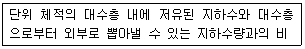
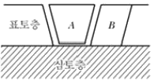
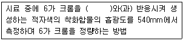
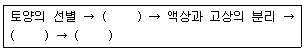
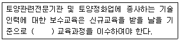
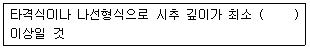
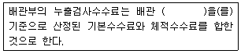

토양환경기사 (2018-03-04 기출문제)
1과목: 토양학개론
1. 토양의 체분석 결과 D10=0.⑤mm, D30=0.25mm, D60=0.75mm일 때 곡률계수(C2)는? (단, 입도분포곡선 기준)
- 0.43
- 0.89
- 1.34
- 1.67
(정답률: 78%)

2. 질산성 질소(NO3-N)의 농도가 40mg/L라면 NO3의 농도(mg/L)는?
- 168.6
- 177.2
- 188.6
- 198.6
(정답률: 63%)
3. 생물농축에 관한 설명으로 잘못된 것은?
- 생물농축은 먹이연쇄를 통해 이루어진다.
- 동물조직의 지방 함량은 화학물질의 생물농축 경향을 결정짓는 데 중요한 인자이다.
- 미나마타병은 대표적인 생물농축에 의한 공해병이다.
- 농축계수란 유해물의 수중농도를 생물의 체내농도로 나눈 값이다.
(정답률: 68%)
4. 토양의 점토 구성 중 2차 광물인 illite에 관한 설명으로 틀린 것은?
- 2:1의 층상 구조를 가진다.
- 습윤 상태에서 팽창이 원활하다.
- K+의 함량이 많은 퇴적물이 저온조건 하에서 변성작용을 받을 때 형성되는 것으로 알려져 있다.
- 토양 중에 흔히 존재하는 점토광물이다.
(정답률: 72%)
5. 토양교질에 흡착되어 있는 상대적 농도 또는 선택적인 흡착순위가 가장 큰 것은?
- 인산
- 황산
- 염소
- 질산
(정답률: 53%)
6. 토양의 산(acid) 중화작용(4단계) 중 2단계에 해당하는 것은?
- 탄산염ㆍ탄삼수소염에 의한 중화
- 교환성 염기에 의한 중화
- 2차 광물에 의한 중화
- Al 수산화물의 용해
(정답률: 59%)
7. 비점 토양오염원에 해당하는 것은?
- 저하저장 탱크
- 매립장
- 산성비
- 정화조
(정답률: 87%)
8. 지하수계 추적자 시험에 사용되기에 가장 적합하지 않은 화합물은?
- 로다민
- 브롬
- 삼중수소
- 탄닌
(정답률: 59%)
9. 바람에 의한 토양침식에서 토양입자들이 크기에 따라 이용하는 형태를 일컫는 용어가 아닌 것은?
- 약동
- 포행
- 침전
- 부유
(정답률: 76%)
10. 토양오염의 특징으로 가장 거리가 먼 것은?
- 타 환경인자와의 영향관계의 모호성
- 피해발현의 급진성
- 오염영향의 국지성
- 오염의 비인지성
(정답률: 83%)
11. 1m3의 건조모래를 가득 채운 용기에 물을 부어 공극이 완전히 채워졌을 때 사용한 물의 양은 240L이었다. 배수용 꼭지를 틀어 장기간 물을 중력 배수시켰을 때 210L가 중력 배수되었다. 이 때 모래의 비보유율은?
- 0.03
- 0.⑤
- 0.10
- 0.15
(정답률: 69%)
12. 지하수 상류와 하류, 두 지점의 수두차 1.5m, 두 지점 사이의 수평거리 500m, 투수계수 250m/day일 때 대수층의 단면적 4m2인 지하수의 유량(m3/day)은? (단, Darcy 법칙 적용, 기타 사항은 고려하지 않음)
- 1.5
- 3.0
- 4.5
- 6.0
(정답률: 77%)
13. 다음 물질 중 양이온치완용량(CEC:Cation Exchage Capacity)이 가장 작은 것은?
- 천연산 제올라이트
- 카올리나이트
- 부식토
- 몬모릴로나이트
(정답률: 79%)
14. 포화대의 수지지질하적 특성 중 다음 설명에 해당하는 지하수 저유 특성은?

- 비산출률
- 비저류율
- 수분보유율
- 비보유율
(정답률: 77%)
15. 토양 중 질소의 거동 특성으로 틀린 것은?
- 질소는 매우 유동적인 영양소로서 NO3-는 음이온으로 토양 중에서 쉽게 이동할 수 있으며, 작물의 흡수에 더하여 용탈이나 침식현상, 탈질현상 등을 통해 토양에서 쉽게 제거된다.
- 토양은 지구상에서 가장 중요한 질소저장고 역할을 하며 토양 중의 총 질소 함량은 0.08~0.4% 정도이며 대부분 유기물의 형태로 존재한다.
- 유기화합물의 형태로 존재하는 질소 중 일부는 쉽게 분해되어 NH4+또는 NO3-형태의 무기질소로 전환되지만 대부분 토양에서 장기간 유기물의 형태로 존재한다.
- 질소는 토양 중 철, 알루미늄 산화물 등과 불용성 침전화합물을 형성한다.
(정답률: 48%)
16. 토양단면을 나타내는 기호에 대한 특성으로 설명이 틀린 것은?
- A : 환원층
- O : 유기물층
- B : 집적층
- R : 암반층
(정답률: 68%)
17. 토양 미생물 종류에 대한 설명으로 맞는 것은?
- 에너지원으로 태양을 필요로 하는 것은 화학합성 미생물이다.
- 유기ㆍ무기화합물을 에너지원으로 하는 것은 광합성 미생물이다.
- 생물 내 탄소원으로 CO2를 이용하는 것은 독립 영양 미생물이다.
- 에너지원으로 CO2를 이용하는 것은 종속영양 미생물이다.
(정답률: 73%)
18. 유류로 오염된 지하수층에 관 측정을 설치하여 유류의 두께를 측정하였더니 1.6m였다. 유류의 비중이 0.8이고, 모세관대의 두께가 30cm일 때 실제 지하환경에서 모세관대 상부에 분포하고 있는 유류의 두께(cm)는? (단, 물의 비중=1)
- 2.0
- 2.5
- 3.0
- 3.5
(정답률: 35%)
19. 토양의 용적비중이 1.17이고, 입자비중이 2.55일 때 토양의 공극률(%)은?
- 약 41.1
- 약 45.9
- 약 51.1
- 약 54.1
(정답률: 74%)
20. 토양오염물질인 BTEX에 포함되지 않는 것은?
- 톨루엔
- 크실렌
- 에틸벤젠
- 에탄올
(정답률: 81%)
2과목: 토양 및 지하수 오염조사기술
21. 토양오염도 검사를 하기 위해 토양시료 재취기를 이용하여 토양시료를 채취하고자 한다. 채취 할 토양시료의 무게(g)는? (단, 일반지역, 지점당)
- 약 500
- 약 1,000
- 약 2,000
- 약 5,000
(정답률: 76%)
22. 밀폐용기에 관한 정의로 가장 적합한 것은?
- 취급 또는 저장하는 동안에 이물질이 들어가거나 또는 내용물이 손실되지 아니하도록 보호하는 용기를 말한다.
- 취급 또는 저장하는 동안에 밖으로부터의 공기 또는 다른 가스가 침입되지 아니하도록 내용물을 보호하는 용기를 말한다.
- 취급 또는 저장하는 동안에 기체 또는 미생물이 침입하지 아니하도록 내용물을 보호하는 용기를 말한다.
- 취급 또는 저장하는 동안에 내용물이 광화학적 변화를 일으키지 아니하도록 방지할 수 있는 용기를 말한다.
(정답률: 75%)
23. 유도결합플라즈마 발광광도법(ICP)에 대한 설명으로 틀린 것은?
- 4,000~6,000K의 고온에서 시료를 여기하므로 중질유 등과 같이 휘발성이 낮은 물질의 측정에 적합하다.
- 플라즈마의 최고온도는 15,000K까지 이른다.
- 플라즈마는 그 자체가 광원으로 이용되기 때문에 매우 넓은 농도범위에서 시료를 측정할 수 있다.
- PCP의 토치는 3중으로 된 석영관이 이용된다.
(정답률: 57%)
24. 저장물질이 없는 누출검사 대상 시설의 가압 시험법에 사용되는 기구 및 기기에 대한 설명으로 틀린 것은?
- 압력계는 최소 눈금이 시험압력의 5% 이내이고, 이를 읽고 측정압력의 기록이 가능하여야 한다.
- 온도계는 시험압력에 충분히 견딜 수 있는 것으로서 최소눈금 1℃ 이하를 읽고 기록이 가능하여야 한다.
- 사용가스는 가압 매체로 질소 등 불활성 가스를 사용한다.
- 안전밸브는 0.1kgf/cm2 이하에서 작동되어야 한다.
(정답률: 78%)
25. 누출검사대상시설에 관한 설명으로 틀린 것은?
- “부속배관”이라 함은 누출검사대상시설에 용점 또는 나사조임방식으로 직접 연결되는 배관을 말한다.
- “지하매설배관”이라 함은 부속배관의 경로 중 지하에 매설되어 누출 여부를 육안으로 직접 확인하기 위해 설치된 배관을 말한다.
- “배관접속부”라 함은 누출검사대상시설과 부속 배관, 부속배관과 배관을 연결하기 위하여 용접 접합 또는 나사조임방식 등으로 접속한 부분을 말한다.
- “누출검지관”이라 함은 액체의 누출 여부를 누출검사대상시설 외부에서 직접 또는 간접적으로 확인하기 위해 설치된 관을 말한다.
(정답률: 74%)
26. 토양오염공정시험기준에 따라 아연의 함량을 측정하기 위한 검량선에서 얻어진 아연의 농도가 2.5mgL이었다면 토양 중 아연의 함량(mg/kg)은? (단, 수분보정한 토양무게=2.7g, 시료용기의 부피=0.1L, 바탕시험용액의 아연농도=0.2mg/L)
- 45.2
- 67.3
- 78.7
- 85.2
(정답률: 33%)
27. 토양시료채취기가 없을 때 모종삽 또는 삽 등과 같은 기구를 사용하여 표토층 시료를 채취할 경우 다음 그림의 어느 부분에서 채취하는 것이 가장 적당한가? (단, 일반지역 기준)

- A부분의 흙을 채취한다.
- A와 B부분의 흙을 1:1로 혼합하여 채취한다.
- A와 B부분의 흙을 1:2로 혼합하여 채취한다.
- A부분을 제거한 다음 B부분의 흙을 채취한다.
(정답률: 78%)
28. 자외선/가시선 분광법을 적용한 6가 크롬 정량에 관한 다음 내용의 ()에 옳은 내용은?

- 피리딘-피라졸론
- 디페닐카르바지드
- 디에틸디티오가르바민산은
- 메틸디메톤
(정답률: 82%)
29. 자외선/가시선 분광법을 이용하여 시안의 농도를 측정 시, 방해물질이 함유되어 있을 경우 전처리를 하여야 한다. 이 때 방해물질별 전처리 방법이 틀린 것은?
- 다량의 지방성분 함유시료 : 아세트산 또는 수산화나트륨 용액으로 pH 6~7로 조절하고 시료의 약 2%에 해당되는 부피의 노말헥산 또는 클로로포름을 넣어 추출하여 유기층은 버리고 수층을 분리하여 사용한다.
- 잔류염소 함유시료 : 잔류염소 20mg당 L-아스코르빈산(10%) 0.6mL를 넣어 제거한다.
- 잔류염소 함유시료 : 잔류염소 20mg당 아비산나트륨용액(10%) 0.7mL를 넣어 제거한다.
- 황화합물 함유시료 : 질산나트륨(10%) 2mL를 넣어 제거한다.
(정답률: 55%)
30. 토양 중 토양수분(moisture content)을 측정하기 위하여 은박 증발접시(3g)를 이용하여 110℃에서 항량이 될 때까지 건조시킨 다음, 건조 전 토양시료만의 무게(10g)와 건조 후 토양시료만의 무게(9g)를 측정하였다. 토양수분 함량(%)으로 적절한 것은?
- 2%
- 5%
- 10%
- 15%
(정답률: 75%)
31. 정도관리요소인 검정곡선 중 상대검정곡선 법의 내부표준물질에 관한 설명으로 옳은 것은?
- 상대검정곡선법은 시험 분석하려는 성분과 물리, 화학적으로 성질은 유사하나 시료에는 없는 순수물질을 내부표준물질로 선택한다.
- 상대검정곡선법은 시험 분석하려는 성분과 물리, 화학적으로 성질은 유사하며 시료에 함유된 순수물질을 내부표준물질로 선택한다.
- 상대검정곡선법은 시험 분석하려는 성분과 물리, 화학적으로 성질은 다르며 시료에 함유된 순수물질을 내부표준물질로 선택한다.
- 상대검정곡선법은 시험 분석하려는 성분과 물리, 화학적으로 성질은 다르고 시료에 없는 순수물질을 내부표준물질로 선택한다.
(정답률: 70%)
32. 토양오염 우려기준 및 대책기준 중 1지역에 해당하지 않는 것은?
- 광천지
- 학교용지
- 묘지
- 종교용지
(정답률: 63%)
33. 토양오염 위해성 평가지침에 의한 평가대상 오염물질이 아닌 것은?
- 벤젠
- 톨루엔
- TPH
- 아연
(정답률: 45%)
34. 금속류-원자흡수분광광도법에 대한 설명 중 틀린 것은?
- 토양 중 금속류를 측정하는 방법으로 토양을 황산으로 산분해하여 전처리한 시료 용액을 직접 불꽃으로 주입하여 원자화한 후 원자흡수붕광광 도법으로 분석한다.
- 이 시험기준은 토양 중에 구리, 납, 니켈, 아연, 카드뮴 등의 금속류의 분석에 적용한다.
- 구리, 납, 니켈, 아연, 카드뮴 등의 금속류는 공기-아세틸렌 불꽃에 주입하여 분석한다.
- 낮은 농도의 납은 암모늄 피롤리딘 디이티오카바메이트(APDC : ammonium pyrrolidne dithio-carbamate)와 착물을 생성시켜 메틸 아이소 부틸 케톤(MIBK : methul isobutyl ketone)으로 추출하여 공기-아세틸렌 불꽃에 주입하여 분석 한다.
(정답률: 45%)
35. 토양정밀조사의 단계별 조사와 내용으로 틀린 것은?
- 기초조사 : 자료조사, 청취조사 및 현지조사 등을 통하여 토양오염 가능성 유무를 판단하기 위한 조사
- 개황조사 : 오염토양 개선대책이 요구되는 지역의 오염면적 및 오염범위를 파악하기 위한 사전 개략조사
- 정밀조사 : 개황조사결과 토양오염 우려기준을 초과하거나 이에 근접하는 지역에 대한 정밀조사
- 실태조사 : 토양오염이 우려되는 지역에 대한 오염실태 평가를 위한 조사
(정답률: 47%)
36. 원자흡수분광광도법에 대한 설명으로 틀린 것은?
- 이 시험방법은 빛이 시료용액 중을 통과할 때 흡수나 산란 등에 의하여 강도가 변화하는 것을 이용한 것이다.
- 시효 중의 목적성분을 정량하기 위해 파장 200~900nm에서 액체의 흡광도를 측정한다.
- 원자흡수붕광광도법은 일반적으로 광원에서 나오는 빛을 다색화장치 등을 통과하게 하여 넓은 파장범위의 빛을 이용한다.
- 투사광과 입사광의 강도는 램버트비어(Lambert-Beer)의 법칙에 따른다.
(정답률: 61%)
37. 저장물질이 없는 누출검사 대상 시설에 대한 비파괴검사시험법 중 초음파 두께 측정을 하려고 한다. 옥외저장시설의 측정지점에 관한 내용으로 틀린 것은?
- 에뉼러판 : 옆판 내면으로부터 탱크 중심 방향으로 0.5m 간격마다의 범위에서 원주방향으로 2m 이하의 간격마다 1개 지점
- 누설자장 등을 이용하여 점검을 실시한 밑 판 및 에뉼러판 : 1매당 2개 지점
- 밑판(구형 탱크는 본체 전부를 밑판으로 보며, 지중탱크의 옆판 중 지반면 하에 매설된 부분은 밑판으로 본다.) : 1매당 3개 지점
- 보수 중 덧붙인 판 또는 교체한 판 : 1매당 1개 지점
(정답률: 53%)
38. 일반지역에서 시안시험용 시료 채취지점에 관한 설명으로 옳은 것은?
- 농경지 또는 기타 지역의 구분 없이 대상지역을 대표할 수 있는 1개 지점을 선정한다.
- 농경지 또는 기타 지역의 구분 없이 대상지역을 대표할 수 있는 5~10개 지점을 선정한다.
- 농경지는 지그재그형으로 5~10개 지점을 선정하고 기타 지역은 중심과 주변 4방위 1개 지점 씩 총 5개 지점을 선정한다.
- 농경지는 지그재그형으로 5~10개 지점을 선정하고 기타 지역은 중심과 주변 4방위 1개 지점 씩 총 9개 지점을 선정한다.
(정답률: 48%)
39. 저장물질이 없는 누출검사 대상시설의 가압 시험법에 의한 누출검사에서 안정된 시험압력이라 함은 가압 후 유지시간 동안 압력강하가 시험압력의 몇 %이하인 압력을 말하는가?
- 10%
- 15%
- 20%
- 25%
(정답률: 73%)
40. THP시험과 수분보정용 시료는 유리병에 공간이 없도록 가득 담고, 마개를 막아 밀봉한 후 냉장상태로 실험실로 운반한다. 이 때 냉장상태의 온도(℃)는?
- -10~-4
- -4~0
- 0~4
- 4~10
(정답률: 79%)
3과목: 토양 및 지하수 오염정화 기술
41. 벤젠(C6H6) 10kg으로 오염된 토양을 원위치 생물학적 복원기술에 의해 정화하고자 한다. 벤젠이 완전 분해되는 데 필요한 산소를 과산화수소(H2O2)로 공급하고자 한다면 필요한 이론적 과산화수소량(kg)은? (단, 2H2O2→2H2O+O2)
- 약 55
- 약 65
- 약 75
- 약 85
(정답률: 56%)
42. 생물학적 통풍법을 적용하기 위한 적용성 실험 항목이 아닌 것은?
- 미생물 생분해 실험
- 미생물호흡률 측정실험
- 영향반경시험
- 미생물 추적자 실험
(정답률: 60%)
43. 토양 내 TCE가 300g 존재하고 주어진 조건에 따라 계면활성제 세정공정을 이용하여 모두 정화 하고자 할 경우, 필요한 계면활성제의 양(kg)은? (단, 계면활성제 내 TCE 용해도=1,000mg/L, 계면활성제의 밀도=1.2kg/L)
- 160
- 280
- 360
- 420
(정답률: 71%)
44. 오염토양 정화 중 열탈착기술에 대한 설명으로 틀린 것은?
- 열탈착 공정에서 발생하는 가스는 같은 용량의 소각 공정에 비하여 가스량이 상대적으로 적게 발생된다.
- 열탈착기술은 유기염소 및 유기인 살충제의 제거가 가능하다.
- 열탈착기술로 처리하는 동안 생성되는 다이옥신류 및 퓨란의 처리가 용이하다.
- 열탈착기술은 다양한 수분함량과 오염농도를 가진 여러 종류의 토양에 적용이 가능하다.
(정답률: 73%)
45. 생물학적 복원 방법들에 대한 설명이 잘못된 것은?
- 고상 생물학적 복원-토양처리장치를 적용하여 토양 내로 통기 및 교반하면서 염류나 유기물을 첨가하여 처리한다.
- 슬러리상 생물학적 복원-유해물질이 고농도로 존재하거나 난분해성 화합물로 오염된 지역의 정화에 적합하다.
- 바이오리액터처리-오염된 지하수를 지상에서 처리한 후 처리된 지하수는 후처리과정 없이 다시 지하로 주입할 수 있어 효과적이다.
- 원위치 생물학적 복원-현장 굴착 비용이 필요 없어 경제적이며 건물이 있는 곳에서도 처리가 가능하다.
(정답률: 44%)
46. 실트질 점토 내 유류오염농도 범위는 10,000~50,000mg/kg이었다. 자연 생분해 속도가 4.0mg/kgㆍday라면 이 지역의 자연저감기간(years)은?
- 6~45
- 16~35
- 6~35
- 16~45
(정답률: 63%)
47. 생물학적 복원기법에서 호기성 조건을 위하여 주입하게 되는데 적정한 산소주입방법이 아닌 것은?
- 대기 중의 공기 주입
- 압축산소 주입
- 과산화질소(N2O2) 주입
- 과산화수소(H2O2) 주입
(정답률: 64%)
48. 오염토양 정화기술 중 열탈착에 대한 설명으로 적절하지 않은 것은?
- 비공극성 입자의 경우 탈착속도는 초기에 크고 빠르게 일어난다.
- 유기물질의 휘발성이 작을수록 탈착되는 속도가 느리다.
- 대개 유기물질의 분자량이 클수록 탈착되는 속도가 빠르다.
- 오염기간이 긴 오염매체일수록 탈착이 어렵다.
(정답률: 77%)
49. 반응성 투수벽체에 관한 설명으로 틀린 것은?
- 영가철은 2가철로 산화되면서 염소계화홥물의 탈염소반응을 일으킨다.
- 반응벽체의 막힘 현상을 최소화하도록 설계하여야 한다.
- 반응벽체의 운영을 위한 인위적 동력이 필요하지 않다.
- 반응벽체 체류시간은 최소화하고 반응매체의 사용은 최대화할 수 있게 설계한다.
(정답률: 42%)
50. 용매추출법 장치의 구성(추출장치의 기본과 정)으로 ()에 들어갈 순서로 맞는 것은?

- 추출물질과 혼합, 물세척, 정화된 토양의 처리
- 추출물질과 혼합, 물정화 및 슬러지처리, 정화된 토양의 처리
- 추출물질과 혼합, 정화된 토양의 처리, 유기 오염 물질 분리
- 추출물질과 혼합, 정화된 토양의 처리, 물정화 및 슬러지 처리
(정답률: 54%)
51. 불포화 토양 내 오염물질의 농도가 4mg/kg이었으며 이와 평형상태인 토양공기 내 오염물질농도는 200mg/m3이었다. 전체 오염물질의 양(mg/m3)은? (단, 토양단위용적밀도=1.7kg/L, 공기부피비=0.6)
- 6,920
- 7,920
- 8,920
- 9,920
(정답률: 39%)
52. 생물학적 통기법을 적용하기 위해서 현장에서 조사한 산소소모율로부터 생분해율(mg/kgㆍday)을 산정한다. 다음 중 생분해율을 산정하는 식의 인자가 아닌 것은?
- 산소밀도
- 흙의 겉보기 비중
- 토양부피 중 질소가 차지하는 농도
- 단위중량의 탄화수소 산화에 필요한 산소요구량의 중량비
(정답률: 45%)
53. 중금속으로 오염된 토양을 pH가 낮은 산용액을 이용하여 중금속을 토양으로부터 분리시켜 처리하는 토양복원 방법은?
- 토양유리화방법(Vitrification)
- 토양세척법(Soil washing)
- 토양경작법(Soil landfarming)
- 토양증기추출법(Soil vapor extraction)
(정답률: 64%)
54. 토양증기추출법(Soil Vapor Extraction) 시스템의 구성요소와 가장 거리가 먼 것은?
- 추출정
- 중력선별장치
- 기액 분리장치
- 배가스 처리장치
(정답률: 70%)
55. 토양경작법(land farming)의 적용성에 대해 잘못 기술한 것은?
- 총 종속영양미생물의 농도가 1,000CFU/g 건조 토양 이상일 경우 적합하다.
- 토양의 pH는 6~8정도의 중성일 때 적합하다.
- 토양의 온도는 10~45℃ 정도를 유지해야 한다.
- 미생물의 적절한 성장을 위해 수분의 함량을 5~15% 정도로 유지해야 한다.
(정답률: 51%)
56. 퇴비화기법(Composting)의 한 형태로, 오염 토양의 폭은 높이의 2배로 시공하며, 충분한 열을 발생시킬 수 있어야 하고, pile의 깊은 부분까지 공기를 주입하여야 하는 기법은?
- Windrow Composting
- Aerated Static Pile Composting
- In-Vessel Composting
- Anaerobic Treatment
(정답률: 46%)
57. 열탈착기술에 사용되는 장치와 가장 거리가 먼 것은?
- 로터리 탈착장치
- 열스크루장치
- 자외선 탈착장치
- 스팀주입 탈착장치
(정답률: 66%)
58. 토양오염 정화방법 중 토양증기추출법에 대한 설명으로 옳지 않은 것은?
- 증기압이 낮은 오염물질의 제거 효율이 높다.
- 짧은 설치기간과 비교적 빠른 처리결과를 기대 할 수 있다.
- 추출된 기체는 대기오염 방지를 위해 후처리가 필요하다ㅑ.
- 휘발성 유기물질 제거에 유리하다.
(정답률: 72%)
59. 토양오염확산방지기술인 고형화/안정화에 관한 설명으로 틀린 것은?
- 폐기물 표면적을 증가시켜 안정화 속도를 빠르게 하는 장점이 있다.
- 일차적으로 폐기물 내 유해성분의 유동성을 감소시키는 것을 목적으로 한다.
- 폐기물의 용해성이 감소하는 장점이 있다.
- 폐기물의 취급이 용이해지는 장점이 있다.
(정답률: 75%)
60. 바이오스파징의 장점으로 틀린 것은?
- 휘발보다 생분해가 주요 제거 메카니즘으로 배출가스 처리가 필요 없을 수 있음
- 오염물질의 이동 및 확산 우려가 없음
- 지하수의 부가적인 처리가 없음
- 지상의 영업 및 활동에 방해 없이 정화작업 수행
(정답률: 62%)
4과목: 토양 및 지하수 환경관계법규
61. 사람의 건강 및 재산과 동ㆍ식물의 생육에 지장을 주어서 토양오염에 대한 대책을 필요로 하는 토양오염의 기준은?
- 토양오염조사기준
- 토양오염우려기준
- 토양오염대책기준
- 토양오염정화기준
(정답률: 76%)
62. 기술인력의 교육과 관련하여 ()에 맞는 것은?

- 2년마다 8시간
- 5년마다 8시간
- 2년마다 24시간
- 5년마다 24시간
(정답률: 78%)
63. 토양보전대책계획의 수립에서 반드시 포함되지 않아도 되는 사항은?
- 오염토양 개선사업의 종류 및 방법
- 단위사업별 주체 및 사업기간
- 단위사업별 참여 기술인력의 구성
- 총소요비용 및 조당방안
(정답률: 45%)
64. 토양보전대책지역에서 실시하는 일반적인 오염토양 개선사업의 종류가 아닌 것은? (단, 기타 시ㆍ도지사가 필요하다고 인정하는 사업은 고려하지 않음)
- 오염물질의 흡수력이 강한 식물식재사업
- 오염된 수로의 준설사업
- 오염토양의 위생적 매립사업
- 오염토양의 열분해 등 정화사업
(정답률: 50%)
65. 지하수에 관한 조사업무를 대행할 수 있는 지하수 관련 전문조사기관이 아닌 것은?
- 한국수자원공사
- 한국농어촌공사
- 한국건설기술연구원
- 한국환경보전협회
(정답률: 54%)
66. 300만원 이하 과태료 부과 대상에 해당되지 아니한 자는?
- 토양오염사실을 발견하고도 신고하지 아니한 자
- 토양정화업자 사업장에 공무원의 출입ㆍ검사를 방해한 자
- 오염토양 반출계획에 관한 적정 통보를 받지 아니하고 오염토양을 반출하여 정화한 자
- 오염토양 개선사업에서 관련된 지도감속을 거부ㆍ방해한 자
(정답률: 33%)
67. 지하수법에서 명시하는 정의가 잘못된 것은?
- 지하수 : 지하의 지층이나 암석 사이의 빈틈을 채우고 있거나 흐르는 물
- 지하수개발ㆍ이용시공업 : 지하수개발ㆍ이용을 위한 시설을 시공하는 사업
- 지하수 영향구역 : 지하수의 수량이나 수질보전이 필요하여 지하수의 수질을 개선하는 사업
- 지하수정화업 : 지하수에 함유된 오염물질을 제거ㆍ분해 또는 희석하여 지하수의 수질을 개선하는 사업
(정답률: 69%)
68. 지하수의 개발ㆍ이용의 허가에 관한 사항으로 옳지 않은 것은?
- 동력장치를 사용하지 아니하고 가정용 우물 또는 공동 우물을 개발하여 이용하려는 경우 시장ㆍ군수ㆍ구청장의 허가를 얻을 필요가 없다.
- 허가를 신철하려는 자는 지하수영향조사를 받은 후 결과를 제출하여야 허며, 시장ㆍ군수ㆍ구청장은 지하수영향조사서를 심사하여야 한다.
- 시장ㆍ군수ㆍ구청장은 지하수영향조사서를 심사하고 그 결과를 허가내용에 반영하여야 하며 기본계획 및 지역관리계획을 고려하여 심사하여야 한다.
- 토양오염물질이나 유해화학물질을 배출ㆍ제조ㆍ저장하는 시설로서 관계법령에 따라 허가를 득하였다고 하더라도 그 설치지역이 지하수 보존 구역이라면 시장ㆍ군수ㆍ구청장의 허가를 얻어야 한다.
(정답률: 49%)
69. 토양관련전문기관의 결격사유에 해당하는 자와 가장 거리가 먼 것은?
- 피성년후견인 또는 피한정후견인
- 파산선고를 받고 복권된 지 2년이 지나지 아니한 자
- 속임수 그 밖에 부정한 방법으로 토양 관련 전문 기관의 지정을 받았다가 취소된 후 2년이 지나지 아니한 자
- 토양환경보전법을 위반하여 징역 이상의 실형을 선고받고 그 집행이 끝나거나 면제된 날부터 2년이 지나지 아니한 자
(정답률: 58%)
70. 토양보전대책지역 지정표지판에 관한 설명으로 틀린 것은?
- 지정목적을 표기한다.
- 토양보전대책지역 내역(주소, 면적, 약도)을 표기한다.
- 표지판의 규격은 가로 3미터, 세로 2미터, 높이 1.5미터 이상으로 하여야 한다.
- 흰색 바탕의 표지판에 검정색 페인트를 사용하여 표기하여야 한다.
(정답률: 79%)
71. 토양환경보전법상 용어의 정의로 옳지 않은 것은?
- 토양오염물질 : 토양오염의 원인이 되는 물질로서 환경부령으로 정하는 것을 말한다.
- 특정토양오염관리대상시설 : 토양을 현저하게 오염시킬 우려가 있는 토양오염 관리대상시설로서 환경부령으로 정하는 것을 말한다.
- 토양오염 : 사업활동이나 그 밖의 사람의 활동에 의하여 토양이 오염되는 것으로서 사람의 건강ㆍ재산이나 환경에 피해를 주는 상태를 말한다.
- 토양처리업 : 토양을 적절한 방법으로 정화처리 하는 업을 말한다.
(정답률: 62%)
72. 오양오염방지조치 명령에 관한 설명으로 틀린 것은?
- 시ㆍ도지사 또는 시장ㆍ군수ㆍ구청장은 토양오염 실태조사 결과 우려기준을 넘은 지역의 정화 책임자에게 6월의 범위 안에서 토양정밀조사를 받도록 명할 수 있다.
- 부득이하게 토양정밀조사 이행기간 내에 조사를 이행하지 못한 자에 대하여는 6개월의 범위에서 1회로 한정하여 이행기간을 연장할 수 있다.
- 시ㆍ도지사 또는 시장ㆍ군수ㆍ구청장은 토양오염실태조사 또는 토양정밀조사 결과 우려기준을 넘는 경우 2년의 범위 안에서 이행기간을 정하여 오염토양의 정화를 명할 수 있다.
- 환경부장관은 토양오염측정망 운영결과 우려기준을 넘는 경우 오염원 인자에게 직접 당해 토양 오염물질의 사용제한을 명할 수 있다.
(정답률: 42%)
73. 토양관련전문기관 중 하나인 토양오염조사 기관을 지정하는 행정기관장은?
- 환경부장관
- 군수ㆍ구청장
- 시ㆍ도지사
- 지방 유역환경청장
(정답률: 49%)
74. 토양환경보전법의 목적이 아닌 것은?
- 토양오염물질의 발생을 최대한 억제
- 토양을 적정하게 관리ㆍ보전함으로써 토양생태계를 보전
- 자원으로서의 토양가치를 높임
- 모든 국민이 건강하고 쾌적한 삶을 누릴 수 있게 함
(정답률: 63%)
75. 환경부장관이 고시하는 측정망 설치계획에 포함되어야 하는 사항이 아닌 것은?
- 측정망 배치도
- 측정지점의 위치 및 면적
- 측정망 설치시기
- 측정항목 및 기준
(정답률: 72%)
76. 토양 관련 전문기관의 지정기준에서 토양오염 조사기관의 장비 중 자가동력시추기에 관한 내용으로 ()에 맞는 것은?

- 2m
- 4m
- 6m
- 8m
(정답률: 74%)
77. 토양환경평가에 관한 내용으로 옳지 않은 것은?
- 토양환경평가의 절차 및 방법의 구체적인 사항은 환경부장관이 정하여 고시한다.
- 개황조사 : 시료의 채취 및 분석을 통한 토양오염의 정도와 범위조사
- 토양환경평가는 기초조사, 개황조사, 정밀조사의 순서로 실시한다.
- 기초조사 : 자료조사, 현장조사 등을 통한 토양오염 개연성 여부 조사
(정답률: 70%)
78. 토양오염 조사기관의 장비, 기술인력에 대한 지정기준으로 적합하지 않은 것은?
- 기사는 해당 분야 산업기사 자격 취득 후 토양관련 분야 또는 해당 전문기술분야에서 4년 이상 종사한 사람으로 대체할 수 있다.
- 기체크로마토그래프 또는 기체크로마토그래프 질량분석기 중 1대를 구비하여야 한다.
- 박사 또는 기술사는 당해 분야 기사 자격 취득 후 토양관련분야 또는 해당 전문기술분야에서 5년 이상 종사한 사람으로 대체할 수 있다.
- 누출검사기관이 토양오염조사기관으로 지정받으려는 경우, 기술인력은 토양오염조사기관 지정에 필요한 기술인력의 2분의 1 이상을 확보해야 한다.
(정답률: 59%)
79. 토양오염 검사수수료에 관한 내용 중 누출검사 수수료(배관부)에 관한 내용으로 ()에 옳은 것은?

- 1라인(시점 및 종점)
- m당(누출 지점)
- m2당(누출 면적)
- 1기당(탱크)
(정답률: 61%)
80. 지하수를 공업용수로 사용하는 경우 지하수의 수질기준 항목에 해당하지 않는 것은?
- 일반세균
- 카드뮴
- 유기인
- 염소이온
(정답률: 61%)
곡률계수(C2)는 다음과 같은 식으로 계산된다.
C2 = (log(D60/D10)) / (log2(log(D60/D30)))
따라서, C2 = (log(0.75/0.⑤)) / (log2(log(0.75/0.25))) = 1.67 이다.
즉, D30을 사용하여 곡률계수를 계산하면 1.67이 된다.